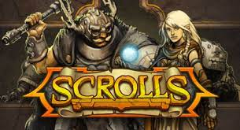
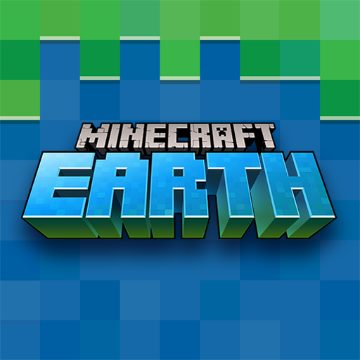

Productos
| imgen |
Producto |
descripción |
Precio |
Valoracion |
 |
Minecraft java/beckdrock |
Minecraft es un videojuego tipo sandbox, su traducción literal sería “caja de arena” y es lo que representa la experiencia de juego. Los jugadores pueden modelar el mundo a su gusto, destruir y construir, como si estuviesen jugando en una caja de arena. |
1,392 |
5/5 |
|  |
Caller's Bane (originalmente Scrolls) |
Caller's Bane, originalmente conocido como Scrolls, es un juego de cartas coleccionables en línea desarrollado por Mojang, la misma compañía que creó Minecraft. Fue lanzado en junio de 2013, pero en 2014, Mojang decidió cambiar el nombre del juego a Caller's Bane debido a problemas legales relacionados con la marca registrada "Scrolls" de Bethesda Softworks, la compañía detrás de la serie de juegos The Elder Scrolls. |
2,000 |
3/5 |
|  |
Minecraft Earth |
Minecraft Earth, el videojuego que buscaba ser la competencia directa de Pokémon Go, fue cancelado, informó Microsoft. En un comunicado, la empresa informó que el juego fue “diseñado alrededor de un movimiento libre y juego colaborativo, dos características que lo hicieron casi imposible en la situación global actual”. |
Cancelado |
0/5 |
 |
Minecraft: Dungeons |
Un juego de acción y aventura inspirado en los clásicos juegos de mazmorras y ambientado en el universo de Minecraft. Lucha contra criaturas icónicas, embárcate en misiones llenas de tesoros y colecciona objetos legendarios: todo en la Edición Ultimate. |
3,000 |
4.5/5 |